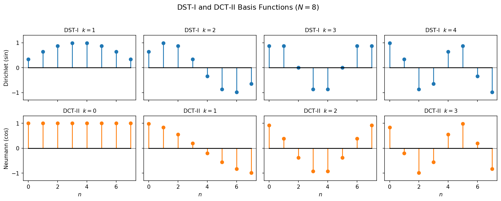
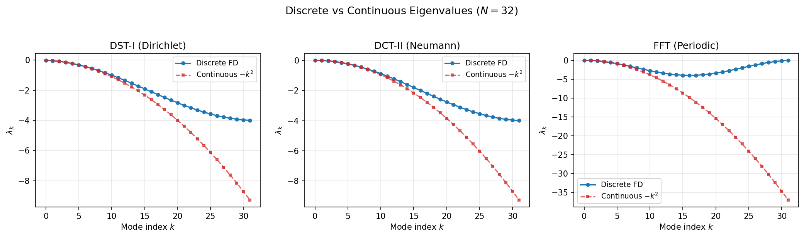

Spectral Transforms: DST & DCT¶
While the FFT handles periodic domains, many physical problems impose Dirichlet (\(\psi = 0\)) or Neumann (\(\partial\psi/\partial n = 0\)) boundary conditions. The Discrete Sine Transform (DST) and Discrete Cosine Transform (DCT) are the spectral transforms that diagonalise the discrete Laplacian under these boundary conditions. They play the same role for bounded domains that the FFT plays for periodic ones.
1. From Boundary Conditions to Transforms¶
The choice of spectral transform is dictated by the boundary conditions of the problem:
| BC type | Physical condition | Transform | Eigenfunction basis |
|---|---|---|---|
| Dirichlet | \(\psi = 0\) at boundaries | DST-I | \(\sin\!\bigl(\pi(k+1)x/L\bigr)\) |
| Neumann | \(\partial\psi/\partial n = 0\) at boundaries | DCT-II | \(\cos\!\bigl(\pi k x / L\bigr)\) |
| Periodic | \(\psi(0) = \psi(L)\) | FFT | \(e^{2\pi i k x / L}\) |
Physical intuition. The DST expands the solution in sine modes, which vanish at both endpoints — exactly what Dirichlet conditions require. The DCT expands in cosine modes, whose derivatives vanish at the endpoints — matching Neumann conditions. The FFT uses complex exponentials, which are periodic by construction.
Choosing the right transform
If your field is zero on the boundary, use DST-I. If the gradient of your field is zero on the boundary, use DCT-II. If the domain wraps around, use the FFT. Mixing these up produces the wrong eigenvalues and incorrect solutions.

2. Discrete Cosine Transform (DCT)¶
The DCT family has four standard types. We follow the unnormalized SciPy convention (norm=None), where the forward transform carries a factor of 2 and the inverse absorbs the full normalisation scale.
DCT-I¶
DCT-II¶
DCT-III¶
DCT-IV¶
Inverse Relationships¶
DCT-III is the unnormalized inverse of DCT-II, and vice versa. DCT-I and DCT-IV are each self-inverse up to a scale factor.
| Forward | Inverse | Scale factor |
|---|---|---|
| DCT-I | DCT-I | \(1 / \bigl(2(N-1)\bigr)\) |
| DCT-II | DCT-III | \(1 / (2N)\) |
| DCT-III | DCT-II | \(1 / (2N)\) |
| DCT-IV | DCT-IV | \(1 / (2N)\) |
FFT-based computation
All four DCT types can be computed via FFT-based algorithms in \(O(N \log N)\) time, by embedding the input into a sequence of length \(2N\) (or \(2(N-1)\)) and extracting the real part of the FFT output.
3. Discrete Sine Transform (DST)¶
The DST family mirrors the DCT, using sine functions in place of cosines. Again we use the unnormalized SciPy convention.
DST-I¶
DST-II¶
DST-III¶
DST-IV¶
Inverse Relationships¶
The pattern is identical to the DCT: DST-III is the unnormalized inverse of DST-II, and DST-I and DST-IV are each self-inverse up to scale.
| Forward | Inverse | Scale factor |
|---|---|---|
| DST-I | DST-I | \(1 / \bigl(2(N+1)\bigr)\) |
| DST-II | DST-III | \(1 / (2N)\) |
| DST-III | DST-II | \(1 / (2N)\) |
| DST-IV | DST-IV | \(1 / (2N)\) |
4. Orthonormal Normalization¶
The transforms defined above are unnormalized (norm=None). It is often useful to work with an orthonormal form (norm="ortho"), where the transform matrix \(C\) satisfies \(C C^T = I\).
What norm="ortho" gives you¶
- Parseval's theorem holds directly: \(\|x\|^2 = \|Cx\|^2\), so energy is preserved without extra scale factors.
- Self-inverse types become exactly involutory: for types I and IV, the orthonormal transform is its own inverse — no division needed.
Orthonormal scaling factors¶
Each type requires a uniform scale applied to all coefficients, plus possible edge corrections for the first or last element.
| Type | Uniform factor | Edge correction |
|---|---|---|
| DCT-I | \(\sqrt{1/\bigl(2(N-1)\bigr)}\) | \(y[0]\) and \(y[N{-}1]\) multiplied by \(1/\sqrt{2}\) |
| DCT-II | \(\sqrt{1/(2N)}\) | \(y[0]\) multiplied by \(1/\sqrt{2}\) |
| DCT-III | \(\sqrt{1/(2N)}\) | pre-scale \(x[0]\) by \(\sqrt{2}\) |
| DCT-IV | \(\sqrt{1/(2N)}\) | none |
| DST-I | \(\sqrt{1/\bigl(2(N+1)\bigr)}\) | none (all weights symmetric) |
| DST-II | \(\sqrt{1/(2N)}\) | \(y[N{-}1]\) multiplied by \(1/\sqrt{2}\) |
| DST-III | \(\sqrt{1/(2N)}\) | pre-scale \(x[N{-}1]\) by \(\sqrt{2}\) |
| DST-IV | \(\sqrt{1/(2N)}\) | none |
DCT-I edge weights
DCT-I ortho normalization requires asymmetric weighting of the boundary elements. Both \(x[0]\) and \(x[N-1]\) carry different quadrature weights (coefficient 1) than interior points (coefficient 2) in the underlying cosine expansion, so a simple uniform post-scaling of the unnormalized output is not sufficient — the endpoints must be pre-scaled by \(1/\sqrt{2}\) before the transform.
When to use ortho
Use orthonormal transforms whenever you need energy-preserving spectral analysis (Parseval), or when you want the transform to be its own inverse (types I and IV with norm="ortho" are exactly involutory). For solving PDEs where you control the eigenvalue division explicitly, the unnormalized convention is often simpler.
5. Finite-Difference Eigenvalues¶
The standard 5-point discrete Laplacian (second-order centered difference) acts on an interior grid point \(v_i\) as:
Each transform type diagonalises this operator under its corresponding boundary conditions. That is, applying the transform converts the tridiagonal Laplacian matrix into a diagonal matrix of eigenvalues.
Eigenvalue formulas¶
The eigenvalue formula depends on the boundary condition and the grid type (regular/vertex-centred vs staggered/cell-centred). All formulas below use \(k = 0, 1, \ldots, N-1\).
Same-BC eigenvalues¶
These cover problems where both boundaries of an axis share the same BC type.
DST-I — Dirichlet BC, regular grid:
All eigenvalues are strictly negative — the Dirichlet Laplacian on a regular grid is negative definite.
DST-II — Dirichlet BC, staggered grid:
All eigenvalues are strictly negative. The forward transform is DST-II; the inverse is DST-III. Critical for incompressible flow solvers where the pressure lives on a cell-centred grid (projection method).
DCT-I — Neumann BC, regular grid:
\(\lambda_0 = 0\) (null mode). The DCT-I is self-inverse (up to normalisation). Requires \(N \geq 2\).
DCT-II — Neumann BC, staggered grid:
\(\lambda_0 = 0\) (null mode). The forward transform is DCT-II; the inverse is DCT-III.
FFT — Periodic BC:
\(\lambda_0 = 0\) is a null mode.
Mixed-BC eigenvalues¶
These cover problems with different BCs on the left and right boundaries of the same axis (e.g., Dirichlet on one side, Neumann on the other). All four mixed-BC types share a common eigenvalue formula — all eigenvalues are strictly negative (no null mode).
DST-III — Dirichlet-left + Neumann-right, regular grid: DCT-III — Neumann-left + Dirichlet-right, regular grid: DST-IV — Dirichlet-left + Neumann-right, staggered grid: DCT-IV — Neumann-left + Dirichlet-right, staggered grid:
Why the same formula?
Although these four cases involve different transforms (DST-III, DCT-III, DST-IV, DCT-IV) and different physical setups, the eigenvalue formula is identical because the mode indices are all half-integer-shifted. The distinction lies in the eigenfunctions and the forward/backward transforms used in the solver.
Complete BC × grid-type mapping¶
| BC | Grid | Transform | Eigenvalue formula | Null mode? |
|---|---|---|---|---|
| Dirichlet | Regular | DST-I | \(-4/\Delta x^2 \cdot \sin^2(\pi(k{+}1)/[2(N{+}1)])\) | No |
| Dirichlet | Staggered | DST-II/III | \(-4/\Delta x^2 \cdot \sin^2(\pi(k{+}1)/[2N])\) | No |
| Neumann | Regular | DCT-I | \(-4/\Delta x^2 \cdot \sin^2(\pi k/[2(N{-}1)])\) | Yes |
| Neumann | Staggered | DCT-II/III | \(-4/\Delta x^2 \cdot \sin^2(\pi k/[2N])\) | Yes |
| Periodic | Either | FFT | \(-4/\Delta x^2 \cdot \sin^2(\pi k/N)\) | Yes |
| Mixed (all 4) | Either | III/IV types | \(-4/\Delta x^2 \cdot \sin^2(\pi(2k{+}1)/[4N])\) | No |
References
This table is derived from Saverin (2023), "SailFFish" (Table 1) and Fuka (2014), "PoisFFT" (Tables 2–4).
2-D eigenvalue matrix¶
For a separable 2-D grid with spacings \(\Delta x\) and \(\Delta y\), the eigenvalues of the 2-D Laplacian are the outer sum of the 1-D eigenvalues:
This separability is what makes spectral solvers so efficient in rectangular domains — the 2-D solve reduces to 1-D transforms along each axis and a pointwise division.
Discrete vs continuous eigenvalues
These are the eigenvalues of the discrete finite-difference operator, not the continuous Laplacian. They are the correct denominator when inverting the 5-point stencil. Using continuous eigenvalues (\(-k^2\)) instead would introduce a systematic error at high wavenumbers.
6. Continuous vs Discrete Eigenvalues¶
It is important to distinguish the eigenvalues of the continuous Laplacian from those of the discrete finite-difference stencil.
Continuous Fourier eigenvalues¶
The continuous Laplacian \(\partial^2/\partial x^2\) has eigenvalues:
These grow without bound as \(k \to \infty\).
Discrete finite-difference eigenvalues¶
The 5-point stencil Laplacian has eigenvalues:
These are bounded: \(|\lambda_k^{\text{disc}}| \leq 4/\Delta x^2\) for all \(k\).
When do they agree?¶
For low wavenumbers (\(k \ll N\)), the small-angle approximation gives:
so \(\lambda_k^{\text{disc}} \approx -4/\Delta x^2 \cdot (\pi k / N)^2 = -(2\pi k / L)^2 = \lambda_k^{\text{cont}}\). The two agree for smooth, well-resolved solutions.
For high wavenumbers near Nyquist (\(k \approx N/2\)), the discrete eigenvalues plateau at \(4/\Delta x^2\) while the continuous eigenvalues keep growing. This discrepancy is not a bug — it reflects the fact that the finite-difference stencil cannot resolve arbitrarily fine scales.
Which eigenvalues to use in SpectralDiffX
Layer 0 functions (solve_helmholtz_dst, solve_poisson_dst, etc.) use the discrete finite-difference eigenvalues. This is correct when inverting the 5-point stencil Laplacian — the transform and eigenvalues are matched to the same discrete operator.
Layer 1 FFT solver classes (SpectralHelmholtzSolver1D, SpectralHelmholtzSolver2D, SpectralHelmholtzSolver3D) use continuous wavenumbers from the FourierGrid. This is correct for pseudospectral methods where derivatives are computed exactly in Fourier space.
Mixing discrete eigenvalues with continuous transforms (or vice versa) produces incorrect solutions.

7. References¶
- Strang, G. (1999). "The Discrete Cosine Transform." SIAM Review, 41(1), 135--147.
- Martucci, S. A. (1994). "Symmetric convolution and the discrete sine and cosine transforms." IEEE Transactions on Signal Processing, 42(5), 1038--1051.
- Buzbee, B. L., Golub, G. H., and Nielson, C. W. (1970). "On Direct Methods for Solving Poisson's Equation." SIAM Journal on Numerical Analysis, 7(4), 627--656.
- SciPy documentation:
scipy.fft.dctandscipy.fft.dstfor normalization conventions.